Презентация · 2026
Модель зрелости от «кто-то пользуется ChatGPT» до системы, которая предупреждает о срыве сама.
Разобрана под стройку: возврат пакета исполнительной, КС-2, фронт работ, дольщики. Отдельный слой — девять ролей за столом объекта, у каждой своя боль и своя ступень. Без «внедрим ИИ под ключ» и без предложения купить то, что вам рано по ступени.
Слайды кликабельны — откроются крупно, чтобы читалось с телефона.
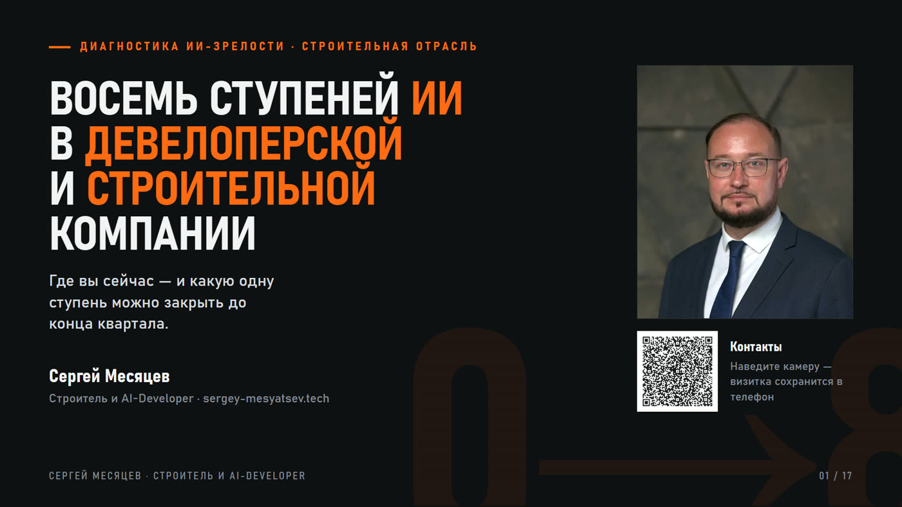
Диагностика ИИ-зрелости для строительной отрасли.
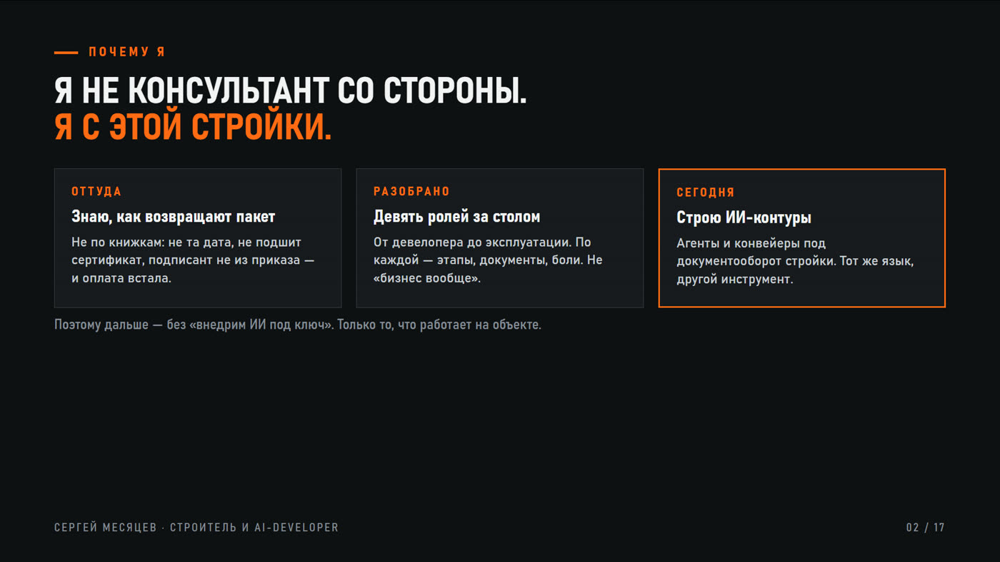
Почему я. Не консультант со стороны — с этой стройки.
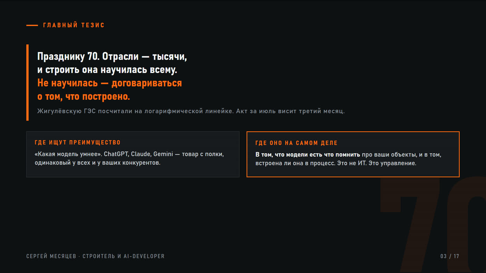
Главный тезис: строить отрасль научилась всему. Договариваться о том, что построено, — нет.
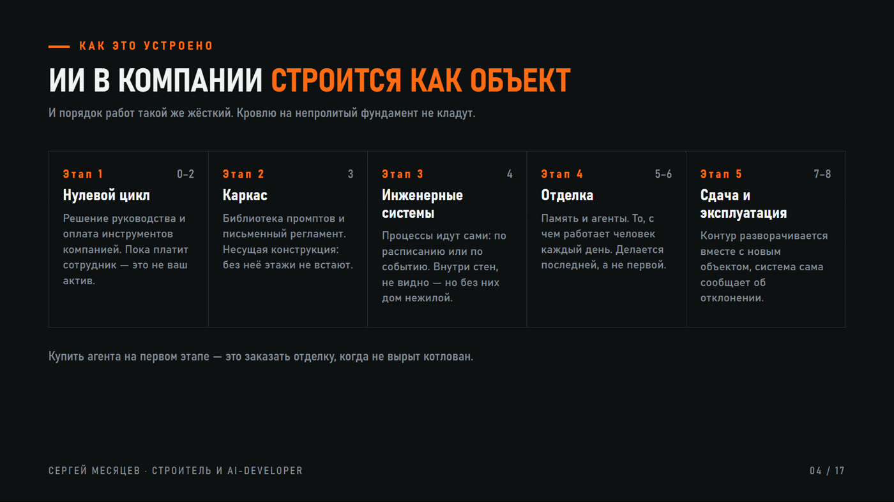
ИИ в компании строится как объект, и порядок работ такой же жёсткий. Кровлю на непролитый фундамент не кладут.
Девять отраслевых анкет — своя для девелопера, техзаказчика, генподряда, подряда, проектировщика, управляющей и эксплуатирующей компании. Десять вопросов, балл сразу на экране, чек-лист по вашей ступени.
Выбрать роль и пройти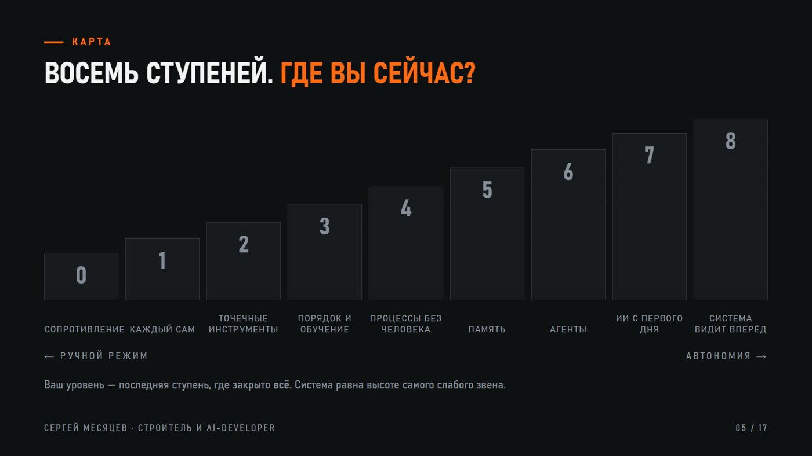
Карта: восемь ступеней целиком. Где вы сейчас?
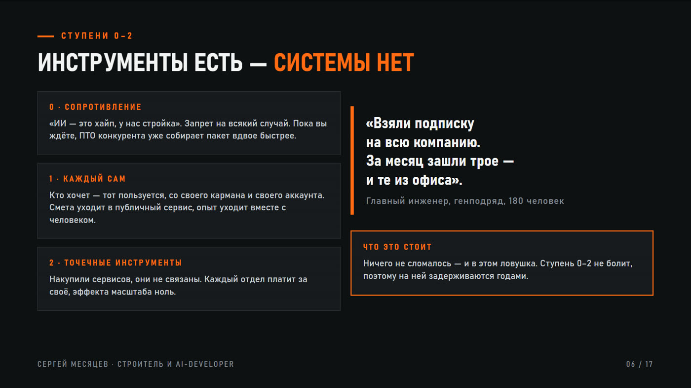
Ступени 0–2: инструменты есть, системы нет. Здесь стоят годами, и ничего при этом не ломается.
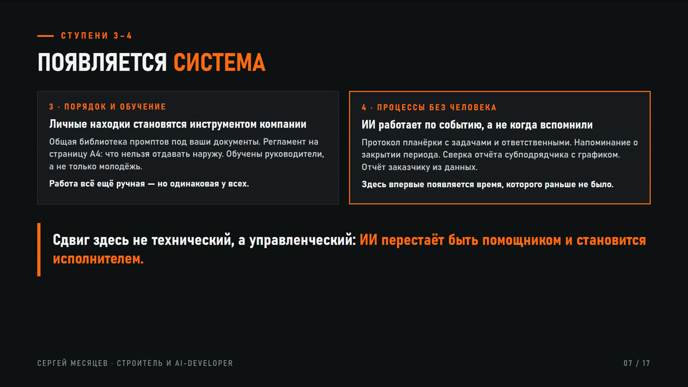
Ступени 3–4: появляется система. Компания платит за инструменты сама, процессы описаны.
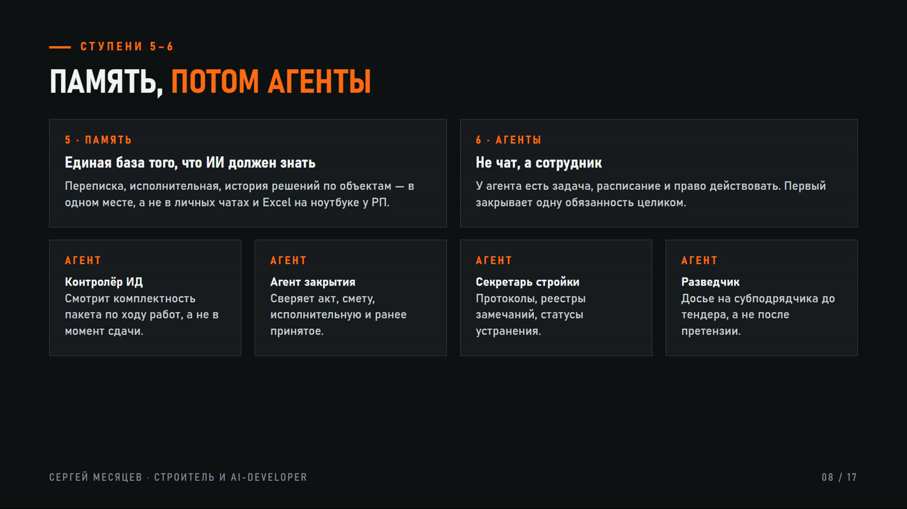
Ступени 5–6: сначала память, потом агенты. Порядок именно такой — агенту нужно, что помнить.
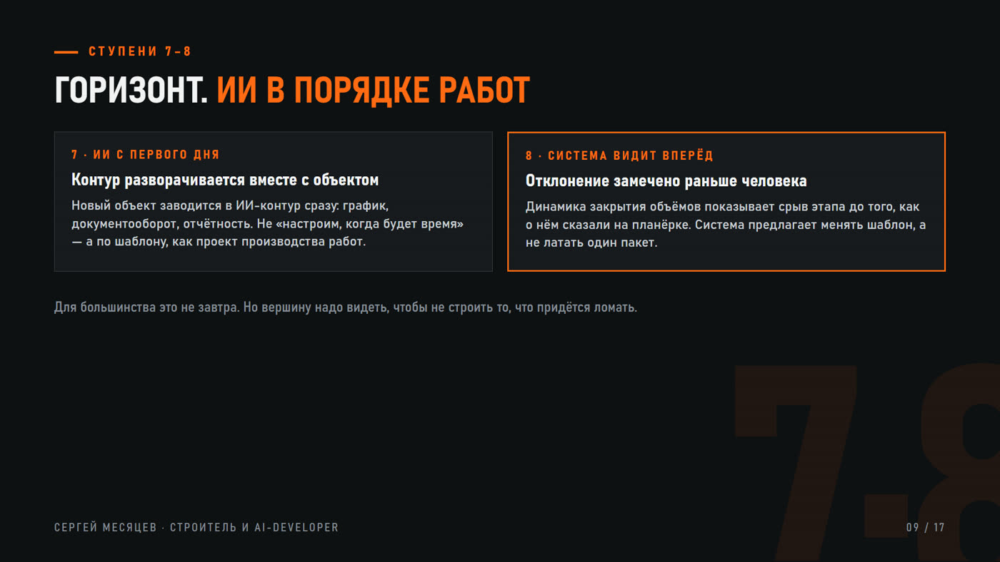
Ступени 7–8: горизонт. ИИ встроен в порядок работ, а не стоит рядом.
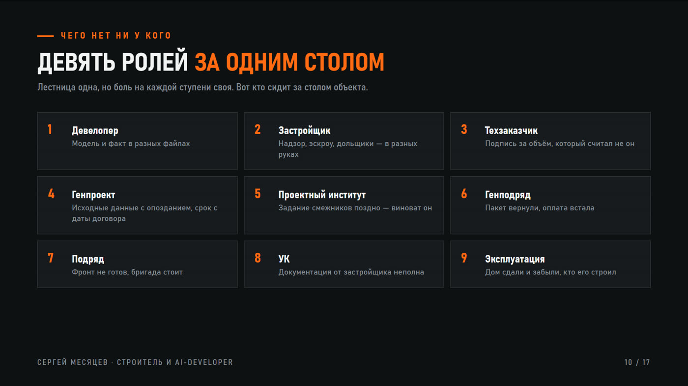
Девять ролей за одним столом — то, чего нет ни в одной чужой модели зрелости. У каждой своя боль.
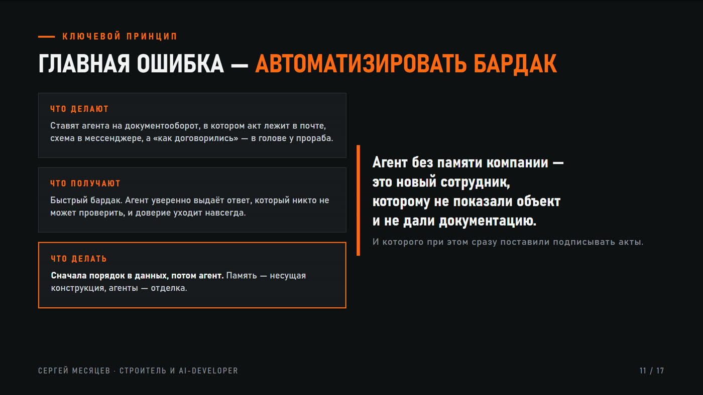
Ключевой принцип: главная ошибка — автоматизировать бардак. Быстрее спорить три итерации не значит спорить меньше.
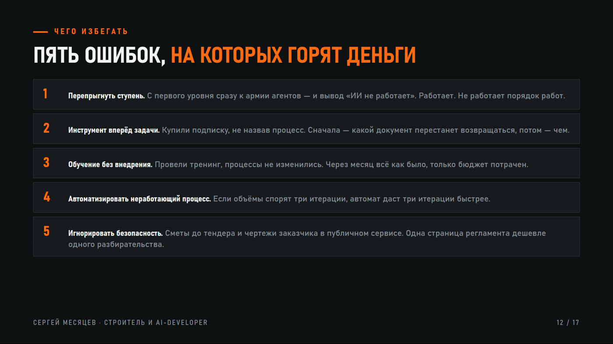
Пять ошибок, на которых горят деньги: перепрыгнуть ступень, инструмент вперёд задачи, обучение без внедрения, автомат на сломанном процессе, игнор безопасности.
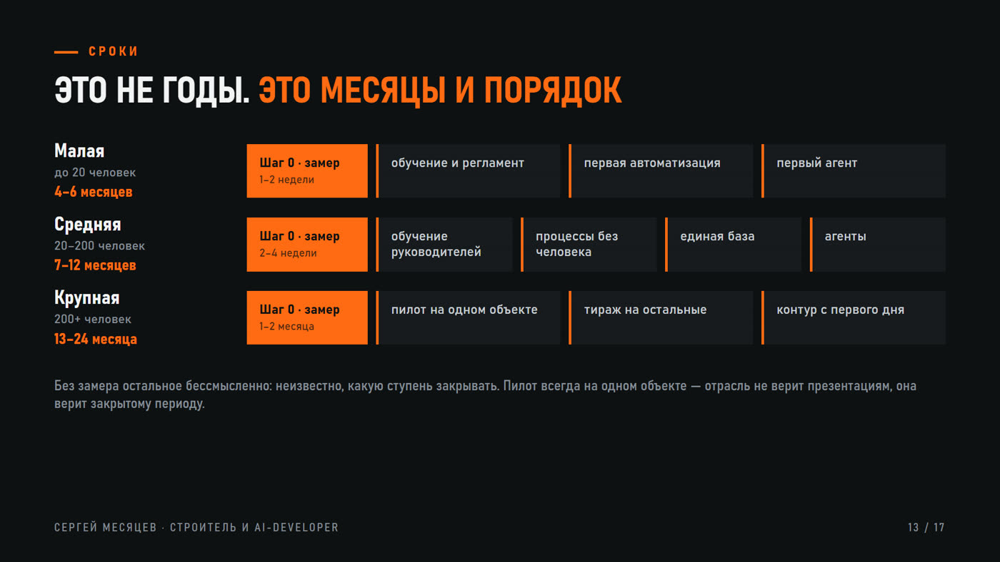
Сроки: это не годы, это месяцы и порядок. Шаг ноль везде — замер, без него неизвестно, какую ступень закрывать.
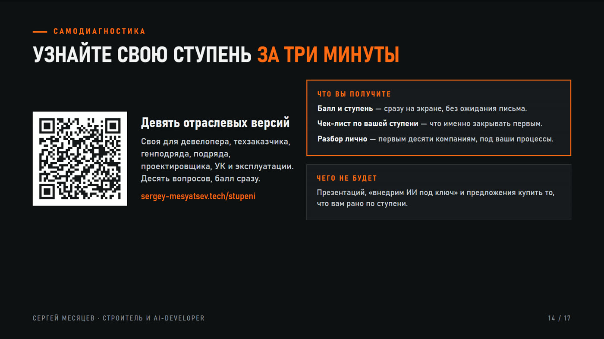
Самодиагностика: балл и чек-лист по своей ступени за три минуты.
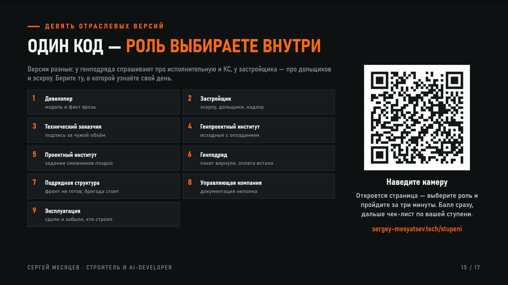
Девять отраслевых версий: у генподряда спрашивают про исполнительную и КС, у застройщика — про дольщиков и эскроу.
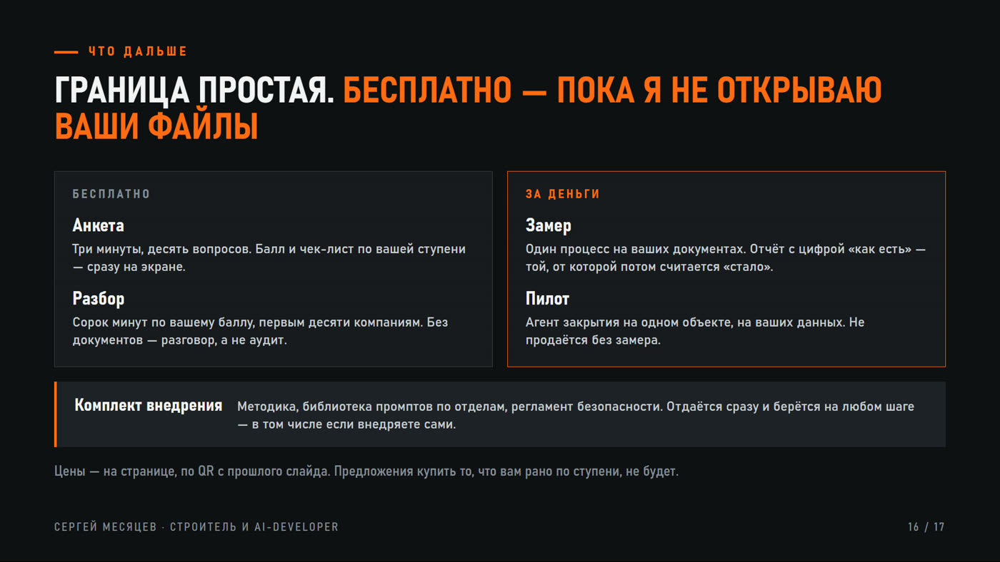
Что дальше. Граница простая: бесплатно — пока я не открываю ваши файлы.
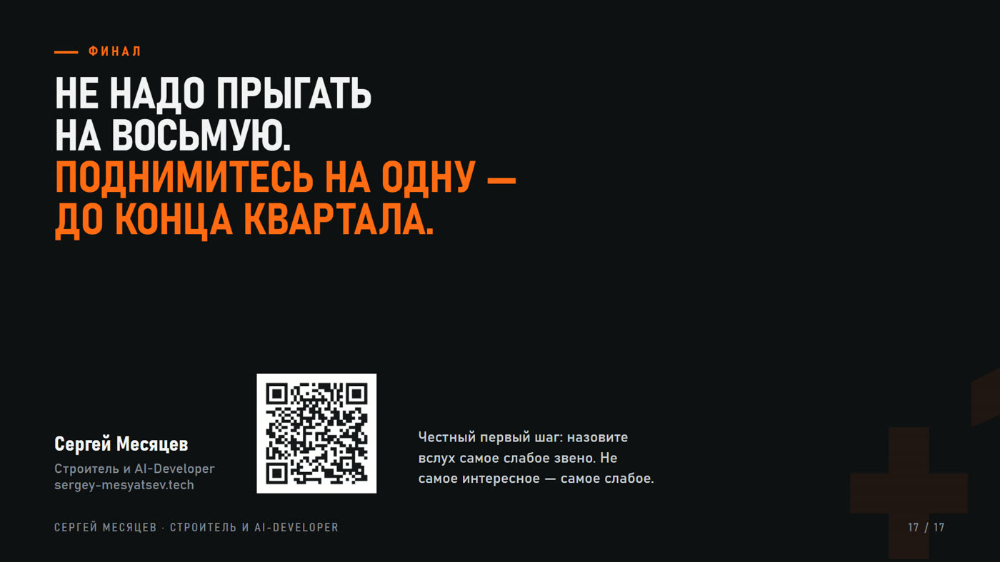
Не надо прыгать на восьмую. Поднимитесь на одну — до конца квартала.
{kind=link}
{kind=link}
{kind=link}
{kind=link}
{kind=link}
{kind=link}
{kind=link}
{kind=link}
{kind=link}
{kind=link}
{kind=link}
{kind=link}
{kind=link}
{kind=link}
{kind=link}
{kind=link}
{kind=link}